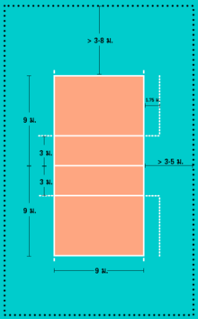

ตำแหน่งผู้เล่น
ผู้เล่นในสนามมี 2 ทีม ทีมละ 6 คน แดนหลังประกอบด้วยผู้เล่นในตำแหน่งที่ 5, 6 และ 1 ส่วนแดนหน้าประกอบด้วยผู้เล่นในตำแหน่งที่ 4, 3 และ 2 โดยนับจากซ้าย(ดังรูป) ตำแหน่งที่ 1 คือ ตำแหน่งผู้เล่นเสิร์ฟ
- ตัวตั้ง หรือ ตัวเซ็ต (Setter) มักต่อบอลในบอลที่สองโดยการตั้งบอลไปยังตัวรุกเพื่อทำคะแนน ตัวเซ็ตต้องมีลักษณะที่ปราดเปรียวว่องไว ไหวพริบดี มียุทธวิธีในการเลือกตัวรุกเพื่อทำคะแนน
- ตัวบล็อกกลาง หรือ ตัวตีกลาง (Middle blocker / Middle hitter) คือผู้เล่นที่สามารถรุกได้อย่างรวดเร็วโดยมักอยู่ใกล้ตัวเซ็ต รวมทั้งมีการบล็อกที่ดี นอกจากนี้ยังต้องสามารถขึ้นบล็อกคู่ด้านข้างของสนามได้เป็นอย่างดี แต่ละทีมมักจะมีผู้เล่นตำแหน่งนี้ 2 คน
- ตัวตีด้านนอก หรือ ตัวตีด้านซ้าย (Outside hitter / Left side hitter) บางครั้งเรียกว่า ตัวตีหัวเสา ทำหน้าที่บุกจากเสาอากาศด้านซ้าย มักจะเป็นตัวตบที่คงเส้นคงวาที่สุดของทีมและมักจะได้บอลจากตัวเซ็ตมากที่สุด กรณีรับบอลแรกไม่เข้าจุด ตัวเซ็ตจำเป็นต้องเซ็ตลูกโด่ง ท้ายที่สุดมักจะเซ็ตบอลมาให้ตำแหน่งนี้ แต่ละทีมมักจะมีผู้เล่นตำแหน่งนี้ 2 คน
- ตัวตีตรงข้าม หรือ ตัวตีด้านขวา (Opposite hitter / Right side hitter) รับหน้าที่เป็นแนวหน้าปกป้องเกมรุกของคู่แข่งเป็นหลัก อยู่บริเวณเสาอากาศด้านขวา โดยคอยบล็อกตัวตีด้านซ้ายของคู่แข่ง และยังเป็นดั่งตัวเซ็ตสำรองด้วย
- ตัวรับอิสระ หรือ ลิเบโร (Libero) คือผู้เล่นที่ชำนาญเกมรับเป็นพิเศษและไม่จำเป็นต้องตัวสูง ถือเป็นตัวที่ต่อบอลได้ดีที่สุดของทีม และจะต้องสวมชุดที่ต่างจากผู้เล่นคนอื่นในทีม ลิเบโรไม่มีสิทธิ์บล็อกหรือตีบอลขณะบอลอยู่เหนือตาข่ายได้ เมื่อเกมหยุด ลิเบโรสามารถเปลี่ยนตัวกับผู้เล่นแดนหลังได้โดยไม่ต้องแจ้งผู้ตัดสินและจะไม่นับรวมว่าเป็นการเปลี่ยนตัวของทีม ลิเบโรสามารถเซ็ตบอลเหนือศีรษะคล้ายตัวเซ็ตได้ก็ต่อเมื่อยืนอยู่หลังเส้นรุกเท่านั้น นอกจากนี้ลิเบโรไม่มีสิทธิ์เสิร์ฟบอล (ยกเว้นในบางองค์กร เช่น NCAA อนุญาตให้เสิร์ฟได้)
- 